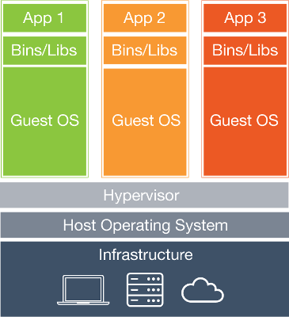
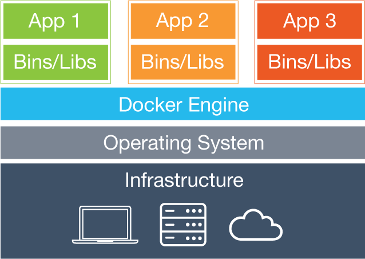
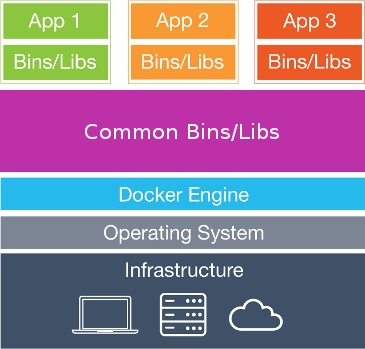
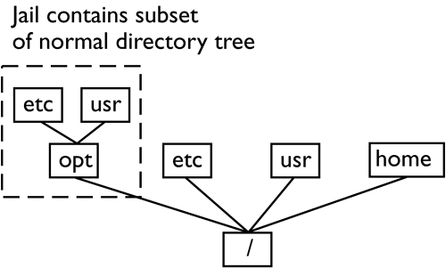

Las Palmas DevOps
Virtualization
“The act of creating a virtual (rather than actual) version of something, including (but not limited to) a virtual computer hardware platform, operating system (OS), storage device, or computer network resources.”
Virtual machines diagram
From the bottom to the top
- Infrastructure ->(Hardware)
- Operating system ->(*Optional)
- Hypervisor ->(Virtual machine monitor)
-
Machine 1
- Gest OS 1 ->(virtual machine OS)
- Bin/Libs 1 (Application dependencies)
- App 1 (Your application)
-
Machine 2
- Gest OS 2 ->(virtual machine OS)
- Bin/Libs 2 (Application dependencies)
- App 2 (Your application)
- ...
What is Docker?
“Docker is an open platform for developing, shipping, and running applications.”
Docker platform
- Docker engine (CLI and System daemon)
- Docker hub (Cloud for docker images)
The underlying technology
-
Namespaces
(provide the isolated workspace)
-
Cgroups
(resource control)
-
Union File System
(provide the building blocks for containers)
-
Container format
(wrapper for different container formats like: Open container, LXC ...)
Docker platform diagram
Using union file system
From the bottom to the top
- Infrastructure ->(Hardware)
- Operating system ->(Not optional)
- Docker Engine ->(docker daemon + docker CLI)
- Common Bins/Libs ->(Common File System layers)
-
Container 1
- Bin/Libs 1 (Application dependencies)
- App 1 (Your application)
-
Container 2
- Bin/Libs 2 (Application dependencies)
- App 2 (Your application)
- ...
Real use cases
We need a little history, to put us in context.
- In 1979 during development of Version 7 Unix.
- The developer team found a problem.
- If you add some bug to your system libraries.
- Your system are broken and it will never start again!!!
- Yep, so if you are a Operating System developer, you need a solution.
chroot
- Operation that changes the apparent root directory for the current running process and its children.
- Cannot name (and therefore normally not access) files outside the designated directory tree.
- The modified environment is called a "chroot jail".
chroot jail
Compile and deploy applications(Java Spring example)
-
Compile java project
docker run --rm \ -v "$PWD":/usr/src/app \ -w /usr/src/app \ java:7 \ bash -c "./gradlew build; chown -R 1000:1000 build .gradle" -
Add a docker file based in java:7 image
echo "FROM java:7" >> Dockerfile echo "ADD build/libs/*.jar app.jar" >> Dockerfile
Compile and deploy applications(Java Spring example)
-
Create a image with your app
docker build -t image-name:image-tag . -
Run your image in background and redirect port 8080 to port 80 in host machine
docker run -d \ --restart=always \ -p 8080:80 \ --name docker-name \ image-name:image-tag